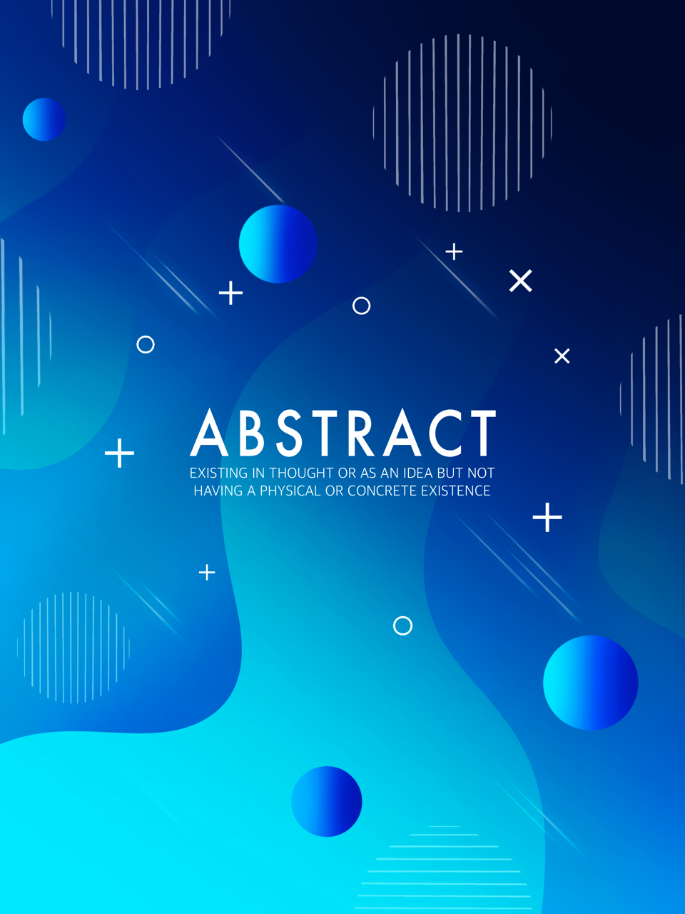
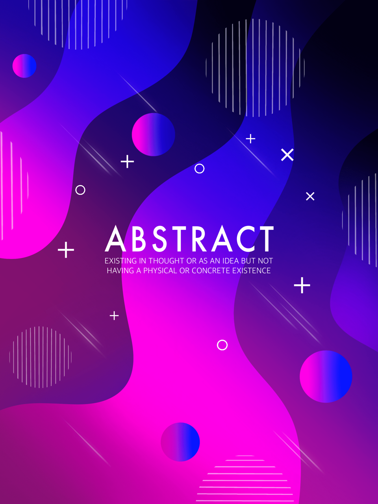
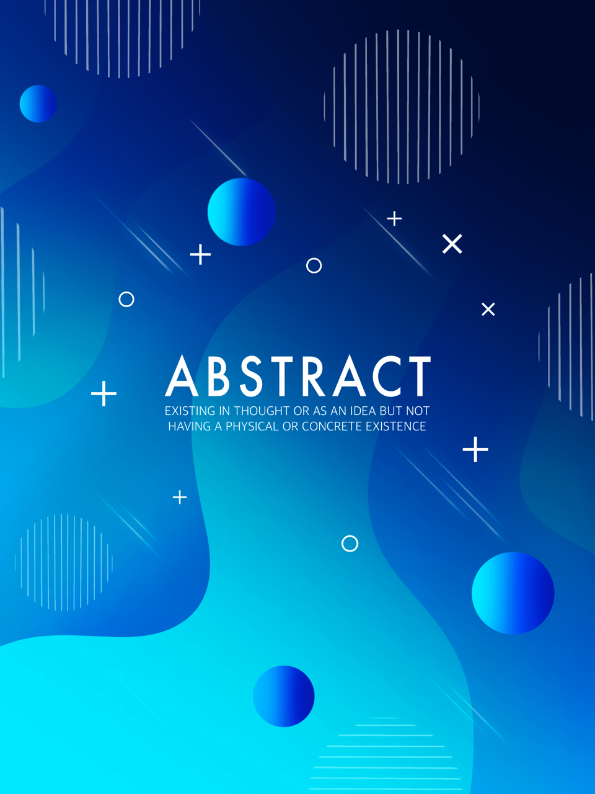
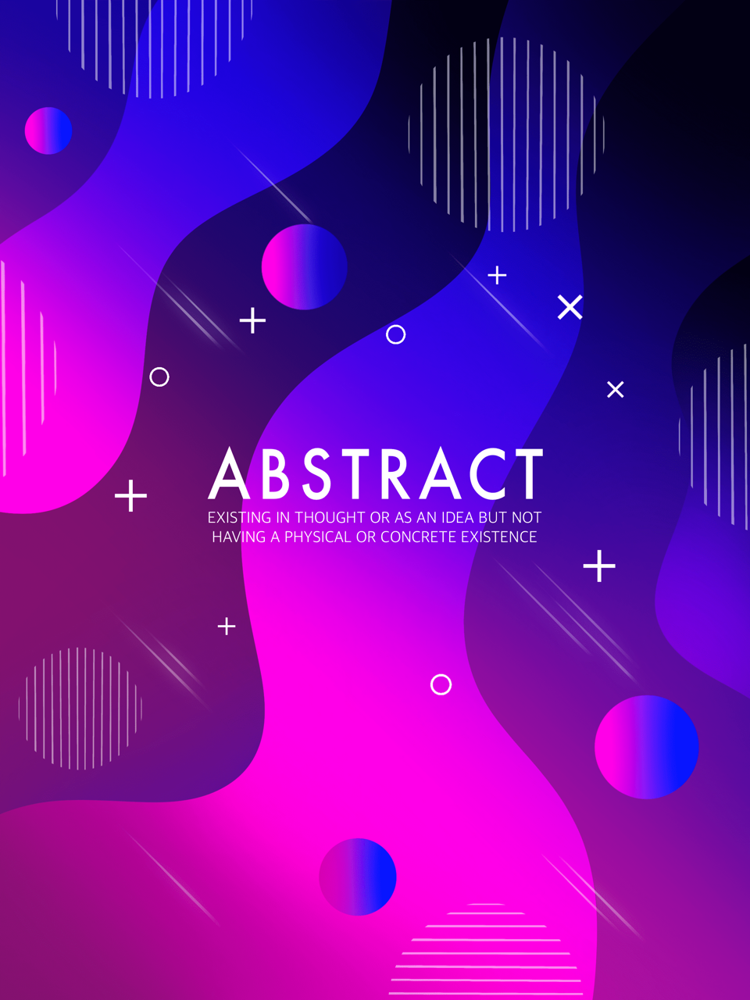

Top

H
E
L
L
O
E
L
L
O
Heavenly
Shot on iPhone 11
July 28th, 2020
Dunières
Shot on iPhone 11
July 28th, 2020
Dunières
Here begins a wonderful project. Stemming from a desire
for change and leading to a concrete decision-making, this
portfolio will allow you to know my background, where I
come from and what I aspire to right now. It is certainly
the most beautiful choice I am ever making in
order to give my life a second wind et give my person the
opportunity to accomplish what I really wish.
i. failure
Fire
Shot on OnePlus 6T
May 5th, 2019
Aubière
Shot on OnePlus 6T
May 5th, 2019
Aubière
Let me introduce myself
It took me a long time and a lot of introspection
to understand why I wanted to leave physics after
five years in order to do something completely different.
Several books have helped me find answers to my questions.
I have now managed to answer all of them and, as I write these lines, my objective could not be clearer.
I have now managed to answer all of them and, as I write these lines, my objective could not be clearer.
My name is Muratcan, mouratkane for the pronunciation,
and I am 23 years old. My interests are so diverse and
varied that I thought this was a problem a few months ago.
However, I knew that my passion for music,
drawing, design, cinema, photography, philosophy and psychology would
not help me in my academic career as a physicist. Indeed, I have
studied science and in particular physics for the last five years.
Today, and for several reasons that I will explain later,
I am looking for renewal.
Fire
Shot on OnePlus 6T
May 5th, 2019
Aubière
Choices
The decision I made may seem incoherent,
insane or even idyllic. Some will say that it is
a shame to stop when I find myself so close to the goal. So I also made the decision to no longer care about the opinion of others. Wouldn't it be
a shame living across the spectrum of other people thoughts ?
Although my passion for physics and scientific research remains unchanged, it is with pleasure that I begin a new training in web development and web design in order to discover new horizons. I like to learn new things all the time because it is through knowledge that we can fight the fear of change.
Thus, I gladly put my creativity at the disposal of my amateur works which reflect my personality and my universe. In 10 years time, I would like to found my web agency in order to help local businesses to increase their activities on the Internet.
insane or even idyllic. Some will say that it is
a shame to stop when I find myself so close to the goal. So I also made the decision to no longer care about the opinion of others. Wouldn't it be
a shame living across the spectrum of other people thoughts ?
Although my passion for physics and scientific research remains unchanged, it is with pleasure that I begin a new training in web development and web design in order to discover new horizons. I like to learn new things all the time because it is through knowledge that we can fight the fear of change.
Thus, I gladly put my creativity at the disposal of my amateur works which reflect my personality and my universe. In 10 years time, I would like to found my web agency in order to help local businesses to increase their activities on the Internet.
Path
Shot on iPhone 11
Edited on Procreate
August 3rd, 2020
Dunières
Shot on iPhone 11
Edited on Procreate
August 3rd, 2020
Dunières

Clouds
Shot on OnePlus 6T
July 1st, 2019
Dunières
Shot on OnePlus 6T
July 1st, 2019
Dunières
Passion & emotion
Thus, I realized that I needed to
improve on my strengths rather than getting
stuck on all the things that no longer interest me. This principle
is disconcertingly obvious when stated in the following way:
Koby Bryant was known to be one of the greatest basketball players in sports history. However, no one ever blamed him for not winning so many titles in football. In the same way that Lewis Hamilton is known for his seven Formula 1 world championship titles without anyone caring that he has no title as a chef.
Koby Bryant was known to be one of the greatest basketball players in sports history. However, no one ever blamed him for not winning so many titles in football. In the same way that Lewis Hamilton is known for his seven Formula 1 world championship titles without anyone caring that he has no title as a chef.
Soul, a movie produced by Pixar studios
shows us a beautiful metaphor for this truth: we have no vocation,
and we are not designed to fit into boxes. Passion is what makes
us vibrate and our lives are punctuated by it, guiding us towards bliss.

A leap of
Faith
Faith
It is on the basis of all these
thoughts that I decided to take
this decisive turn in my life.
Failures Bad experiences of my life have taught me to be aware of my weaknesses and to accept them, they have made me wiser and benevolent towards myself. They asked me the question about what I could become. Without abandoning my ambition and my curiosity, they finally made me available for something else. Something more inspiring.
Failures Bad experiences of my life have taught me to be aware of my weaknesses and to accept them, they have made me wiser and benevolent towards myself. They asked me the question about what I could become. Without abandoning my ambition and my curiosity, they finally made me available for something else. Something more inspiring.
Never Back Down
Made on Procreate
March 18th, 2021
ii. virtue
Let me
show you
my creations
show you
my creations

It was during this long questioning period that I was
able to create my most beautiful pieces, that
I was able to express my tastes, deepen my style
and discover myself as a creator.
White sail
Shot on Nikon D5500
F/5
ISO 1600
Shutter speed 5’’
Edited on Lightroom
March 8th, 2021
Shot on Nikon D5500
F/5
ISO 1600
Shutter speed 5’’
Edited on Lightroom
March 8th, 2021
The colour of Feelings

I was able to obtain this colour pallet
thanks to the large screen of a tablet.
My friends describe it as "psychedelic".
For me, it reminds me of a cyberpunk
world, filled with neon lights, just like
Blade Runner or
Ghost in the Shell.
The pages you see are from Esther Perel's book
called The State of Affairs: Rethinking Infidelity
Although it has a controversial title, it nevertheless
explains how a couple could reconnect by looking the
reality of adultery in the face. It invites us to analyze
its causes, all events that led to it and what need to be
improved to avoid it in the future. Therefore, the purpose
of this book isn't to endorse deception but to understand its
causes to prevent them. Bringing an open mind and a more
critical view of the situation, it allows us to better
contextualize what we call cheating
in order to avoid too hasty judgments such as "Son of a b*tch !"
Words
Shot on Nikon D5500
F/3.5
ISO 1600
Shutter speed 7’’
Edited on Lightroom
March 8th, 2021
Shot on Nikon D5500
F/3.5
ISO 1600
Shutter speed 7’’
Edited on Lightroom
March 8th, 2021
Japanese Staircase
Made on Procreate
on iPad Pro
April 18th, 2021
Made on Procreate
on iPad Pro
April 18th, 2021
Japanese Staircase
Made on Procreate
on iPad Pro
February 23th, 2021
Made on Procreate
on iPad Pro
February 23th, 2021
One
To
To
Way
The
Top
The
Top
«There is not one virtue of failure, but several.
There are failures which induce an insistence of the will,
and those which allow the relaxation of it; failures that give
us the strength to persevere on the same path, and those that
give us the momentum to change it.»
The virtues of failure
Charles Pépin
Charles Pépin

Ramifications
Shot on Nikon D5500
F/2
ISO 350
Shutter speed 1/2000’’
Edited on Lightroom
February 18th, 2021
Shot on Nikon D5500
F/2
ISO 350
Shutter speed 1/2000’’
Edited on Lightroom
February 18th, 2021
Failures which we live throughout our existence
no longer depends on us when they are there. Impotent when
facing reality, it is however possible to bounce rather
than crying on our "unfair" fate.
Hard Work
Time Stands Still
Shot on Nikon D5500
F/2.5
ISO 1850
Shutter speed 9’’
Edited on Lightroom
March 7th, 2021
Shot on Nikon D5500
F/2.5
ISO 1850
Shutter speed 9’’
Edited on Lightroom
March 7th, 2021
“What is time?
If no one asks me, I know;
But if you ask me
And I want to explain it,
I don't know anymore."
If no one asks me, I know;
But if you ask me
And I want to explain it,
I don't know anymore."
Saint-Augustin
We live out of time when
bliss embrace us,
We experience infinity when boredom overwhelms us.
We would like to be immortal without knowing that actually, we yearn for eternity.
bliss embrace us,
We experience infinity when boredom overwhelms us.
We would like to be immortal without knowing that actually, we yearn for eternity.

Is time a
flat circle ?
Endlessly

Piano has the power to soothe me
when I play it and to focus on my tasks when I
listen to it. Learning alone for almost
three years, the practice of this instrument
makes me more patient, more disciplined and
improves my musicality.
Touch
Shot on Nikon D5500
F/4.5
ISO 1700
Shutter speed 6’’
Edited on Lightroom
March 9th, 2021
F/4.5
ISO 1700
Shutter speed 6’’
Edited on Lightroom
March 9th, 2021
Reality is our most valuable source of
learning because although it is not malevolent,
it remains unbiased and immutable.
It is in it that the greatest pain lies, and it is by following it that we learn from our mistakes. We will never control reality and this is an invitation to become a little more stoic every day.
it remains unbiased and immutable.
It is in it that the greatest pain lies, and it is by following it that we learn from our mistakes. We will never control reality and this is an invitation to become a little more stoic every day.

Turning around
Shot on Nikon D5500
F/2
ISO 2000
Shutter speed 5’’
Edited on Lightroom
March 9th, 2021
F/2
ISO 2000
Shutter speed 5’’
Edited on Lightroom
March 9th, 2021
iii. bliss
There are
so many
things
to see
so many
things
to see
Putting things into perspective is the
best way to free ourselves from the ills of everyday life.
The world does not revolve around our singular person, and
we are wrong to want to control what cannot be. Failure is
often presented as being able to be overcome by simple perseverance,
by a power of will. And the feeling of cowardice invades us when we
let go of a situation that makes us suffer. However, all this amounts
to forgetting that one of the virtues of failure is to remind us that
our power over reality is limited. The famous quote "when you want,
you can" then seems to be an absurdity as well as an insult to the
complexity of the reality. The narcissism that emanates
from this sentence makes us all more unhappy when a situation escapes us, and it
leads to a pejorative judgment, devoid of objectivity, a depreciation that
brings deep sadness. It is then important to take the necessary step
back to better undertake a task or a mission. Questioning and knowing
how to live are essential, especially when we meet people and an
environment that is unfamiliar to us.
We Have Everything We Need
Made on Procreate for iPad Pro
July 4th, 2020
 



Metaphysical
Art
Art
Abstract posters
Made on Adobe Illustrator
January 27th, 2021
Made on Adobe Illustrator
January 27th, 2021
Never Stop Making
Made on Procreate
on iPad Pro
February 11th, 2021
Made on Procreate
on iPad Pro
February 11th, 2021
At
I
I
the end
have lost
you
have lost
you
I like the idea of contrast between elements of an artwork.
It can help to soothe the pain of a breakup thanks to spring
motifs in warm colors.
Afraid of Losing You
Made on Procreate
on iPad Pro
May 22th, 2020
Made on Procreate
on iPad Pro
May 22th, 2020

Fly
Shot on OnePlus 6T
with a newtonian telescope
Edited on Adobe Lightroom
October 7th, 2019
Aubière
with a newtonian telescope
Edited on Adobe Lightroom
October 7th, 2019
Aubière


Pixels
Orion’s Belt
Shot on Nikon D5500
F/13
ISO 1600
Shutter speed 10’’
Edited on Lightroom
February 17th, 2021
Dunières
Shot on Nikon D5500
F/13
ISO 1600
Shutter speed 10’’
Edited on Lightroom
February 17th, 2021
Dunières
Jupiter x Milky Way
Shot on Nikon D5500
F/14
ISO 3000
Shutter speed 15’’
Edited on Lightroom
August 26th, 2020
Saint-André-en-Vivarais
Shot on Nikon D5500
F/14
ISO 3000
Shutter speed 15’’
Edited on Lightroom
August 26th, 2020
Saint-André-en-Vivarais
There's a star man...
All the elements that make up the universe come from
the explosion of a star. When it dies, the star projects
its matter in an explosion called Supernova. It is thanks
to this explosion that these elements disperse in the universe.
It is thanks to the death of a star that we are born.
Circumpolar
Shot on Nikon D5500
F/13
ISO 2700
Shutter speed 8’’
Made with 280 shots
Edited on Lightroom
August 26th, 2020
Saint-André-en-Vivarais
Shot on Nikon D5500
F/13
ISO 2700
Shutter speed 8’’
Made with 280 shots
Edited on Lightroom
August 26th, 2020
Saint-André-en-Vivarais

...waiting in the sky
“We who embody the cosmic eyes, ears, thoughts
and feelings are finally beginning to question our origins.
Stardust gazing at the stars."
-Carl Sagan
Stardust
Shot on Nikon D5500
F/13
ISO 3200
Shutter speed 13’’
Edited on Lightroom
August 21st, 2020
Saint-Julien-Molhesabate
Shot on Nikon D5500
F/13
ISO 3200
Shutter speed 13’’
Edited on Lightroom
August 21st, 2020
Saint-Julien-Molhesabate
I like everything that shines, everything
that is luminous. The sparkling spots that
you only see out of the corner of your eye.
The ephemeral flashes that pierce the darkness
of the sky. Sunbeams breaking through the mist.
The diffuse thoughts that illuminate our nights
with their incessant flashes. The immensity.
Milky Way
Shot on Nikon D5500
F/13
ISO 3200
Shutter speed 20’’
Edited on Lightroom
August 15th, 2020
Dunières
Shot on Nikon D5500
F/13
ISO 3200
Shutter speed 20’’
Edited on Lightroom
August 15th, 2020
Dunières
This portfolio was an opportunity to introduce myself in
a different, deeper and more intimate way. You will have learned,
I hope, about me and my background. I tried as much as possible to
transcribe my universe through my creations and my texts. Aware that
I still have a lot to learn, I am convinced that my hard work will pay off.
Thank you for going to the end of these pages.
Muratcan USTUN
Back to top